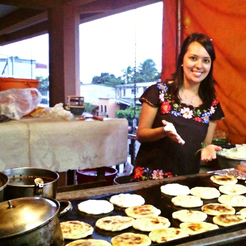

Va Querer
You either love them, or you have yet to try them! Known for their few, yet incredible ingredients stuffed inside a perfectly iron grilled masa, it's no wonder pupusas are gaining strong momentum among San Francisco foodies. The problem? Great pupusas are a hard find. At Va Querer, translation, You are going to want, our mission is to bring delicious pupusas to the people!
